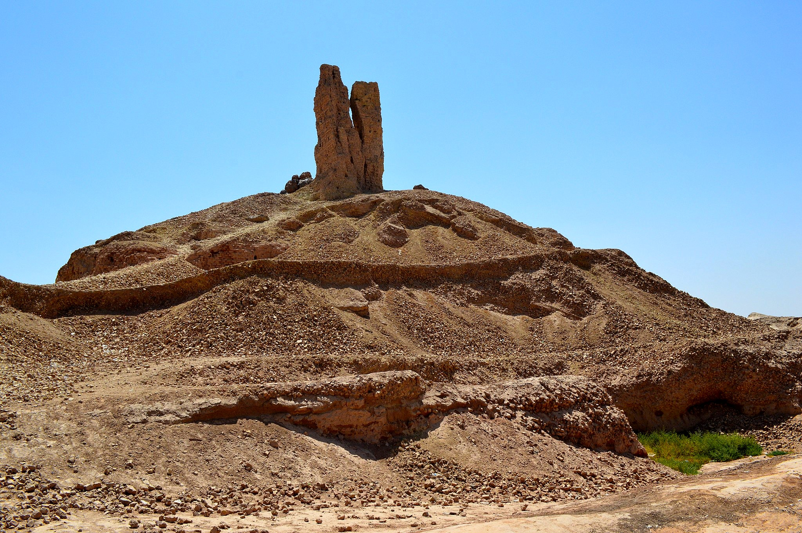

Borsippa Ziggurat (Birs Nimrud)

- Find Name
- Borsippa Ziggurat (Birs Nimrud)
- Description
- An ancient city of Sumer about 18 km southwest of Babylon, whose temple of Nabu, Ezida, and its staged tower still rise about 50 metres above the plain at Birs Nimrud — one of the most vividly identifiable surviving ziggurats. Rawlinson uncovered foundation prisms of Nebuchadnezzar II's restoration of the Nabu temple, and Rassam concentrated on Ezida itself; some two thousand tablets were later looted from the temple. Nebuchadnezzar's inscription describes the tower of Borsippa as an ancient work whose top had fallen to ruin and which he restored, and later Talmudic and Arabic tradition identified the ruin with the Tower of Babel. Modern scholarship concludes the builders raised it as a religious edifice for Nabu, the son of Babylon's Marduk, as befitted Babylon's lesser sister-city.
- Historical Period
- Neo-Babylonian, 6th century BC (earlier stages older)
- Evidence Class
- Disputed
- Interpretations
- DOUBT STATED: the ziggurat and its identity as Nabu's Ezida tower are secure, but its identification with the Genesis 11 tower is traditional only — the rival traditional candidate, Etemenanki at Babylon, is already entry #228, and modern scholarship assigns Borsippa's tower to Nabu. Borderline rather than clear because the biblical illumination (Genesis 11:1-9) depends on that unproven tradition.
- Alternative Names
- Birs Nimrud; Tongue Tower (traditional)
- Related Places
- Related Books
- Related Events
- Related People
- Scripture Illuminated
- Biblical Significance
- Borsippa's ruined ziggurat is the most striking tower still standing in Babylonia, and Jewish and Arabic tradition has long called it the Tower of Babel — Nebuchadnezzar's own inscription calls it the tower of Borsippa, left unfinished by a former king. Modern scholarship reads it as the temple-tower of Nabu, not the Genesis tower, so the Babel link is tradition only, and this entry stays borderline.
- Artifact Date
- Temple of Nabu (Ezida) restored by Nebuchadnezzar II, 6th century BC; earlier stages older
- Current Location
- In situ, Birs Nimrud, Babylon Governorate, Iraq
- Date Discovered
- Worked by Henry Rawlinson, 1854; excavated by Hormuzd Rassam, 1879-1881
- Discovery Location
- Birs Nimrud, Babylon Governorate, Iraq
- Timeline Era
- Exile
Awaiting Review Not yet checked against scholarly sources. Treat its claims as provisional until this entry is reviewed. About verification
Last reviewed: not yet reviewed